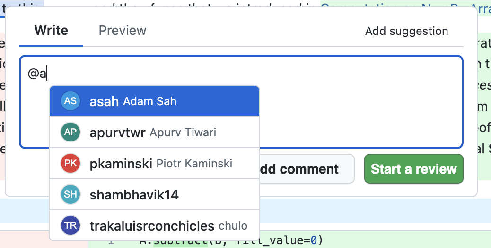

Self Hosted Release Notes
gitnotebooks/self-hosted:1.2.3
- Bug Fixes
- Fixed an issue with reply comments. If someone replied to a comment within GitNotebooks on a file that's not a Jupyter Notebook, the parent comment's text would be used for the comment body rather than the comment typed out by the user.
gitnotebooks/self-hosted:1.2.2
- Features
- Added a new environment variable
USE_INITIALS_FOR_AVATARS. When set totrue, the app will not use GitHub avatars. Instead, it will create initials using the GitHub username and assign a randomized background color. This feature was added to address a much discussed shortcoming of the GitHub Enterprise Server API which breaks user avatar links. 
- Added a new environment variable
- Security
- Upgraded Next.js to
15.2.3to patch a middleware bypass vulnerability. GitNotebooks was not affected by this vulnerability, but we may use middleware in the future.
- Upgraded Next.js to
gitnotebooks/self-hosted:1.2.1
-
Features
- Bi-directional comment syncing between GitHub and GitNotebooks. If a comment is posted in GitNotebooks, it will be cross-posted to the corresponding JSON line in GitHub. If a comment is posted in GitHub, it will be shown in the corresponding rendered notebook line. Syncs comment edit and delete as well
- Ability to "Add suggestion" to a notebook or code file and then apply the change within GitHub
- Added a repo file explorer similar to a repo's home page in GitHub to allow notebook reviewers to quickly check python modules referenced from a notebook
- Log more events and improved readability of server logs:
INFO,WARN,ERROR, instead of30,40,50 - View self hosted license information from the app home page: number of seats, expiration, license type
-
Bug Fixes
- File renames are now handled better. Comments used to disappear if they were posted to a renamed file and then a subsequent change was pushed to that notebook. This, and other edge cases related to rename behavior, has been fixed
Required Changes: In order to upgrade to version 1.2.1 there are four requirements
- Set a new environment variables
LICENSE_KEY- Allow egress from the GitNotebooks service to https://license.gitnotebooks.com
- Set the
GITHUB_BASE_URLto the url of the GitHub API e.g.https://api.github.comfor GitHub Enterprise Cloud. For GitHub Enterprise Server usehttps://${CUSTOM_GITHUB_DOMAIN}/api/v3- Modify the GitNotebooks GitHub App to subcribe to the following events
- Pull request review
- Pull request review comment
- Pull request review threadPull request thread comment